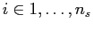
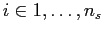
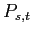
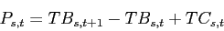
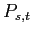
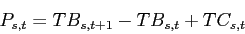
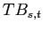
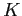

Next: Database access Up: Methods - was ``The Previous: Data integrity and quality
To obtain a comparable set of BRPs, for all stocks  with available
total catch () and total biomass (
with available
total catch () and total biomass ( ) timeseries data (
) timeseries data ( ,
and
,
and
 ,
), a Schaefer
surplus production model was used to estimate total biomass and
fishing mortality at Maximum Sustainable Yield ( and
, respectively).
,
), a Schaefer
surplus production model was used to estimate total biomass and
fishing mortality at Maximum Sustainable Yield ( and
, respectively).
|  | (1) |
and can then be calculated as:
|  | (2) |
| (3) |
Stock-recruitment database administrator 2010-04-15